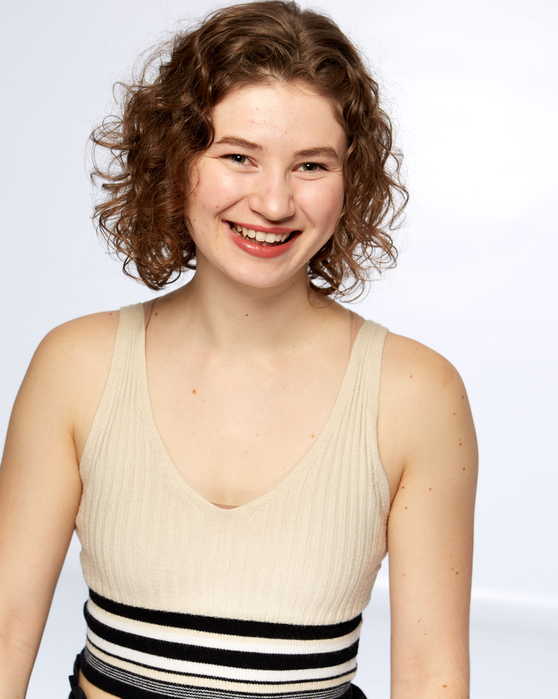

About Me
Claire Sersun is an American artist, dancer, choreographer, movement instructor, web designer, and photographer. She started her career at 15 dancing in music videos in Los Angeles. She then moved to NYC and received her BA in dance from Marymount Manhattan College. While there she was also able to explore her interests in photography and kinesiology. While in NYC, Claire has had the pleasure of performing and sharing her choreography and photography across the city. She has performed works by Valeria Gonzalez, Mackenzie Martin, Cornelius Carter, Deborah Damast, Karen Gayle, Elizabeth Roxas-Dobrish, Troy Ogilvie, Camille Loftin, Anthony Ferro, Christy Curtis Buss, Charm La'Donna, and more. She was apart of VALLETO Dance's Fall 2020 virtual season. She is currently apart of Geometry Dance Company as a G2 artist.
Claire holds a 200 hour yoga certification and a Personal Training Certification from the American Council on Exercise (ACE). She is trained in the Bridging The Gap Movement Method™ which is a neurophysiological conditioning program. She is trained in somatic based fitness and dance programs as well as pedagogy for those dealing with the effects of cancer and aging. Claire is a Moving For Life Certified Instructor and a BodyMind Dancing Associate. Her passion is in getting people moving so that they can love their bodies and live their lives to the fullest of their abilities.
Claire is a Graduate Student in the University of Florida's College of Journalism and Communications. She is working towards a Master of Arts in Mass Communication with a concentration in Web Design. Claire loves helping to build out the voice of the individual, company, or organization through their website's presence.